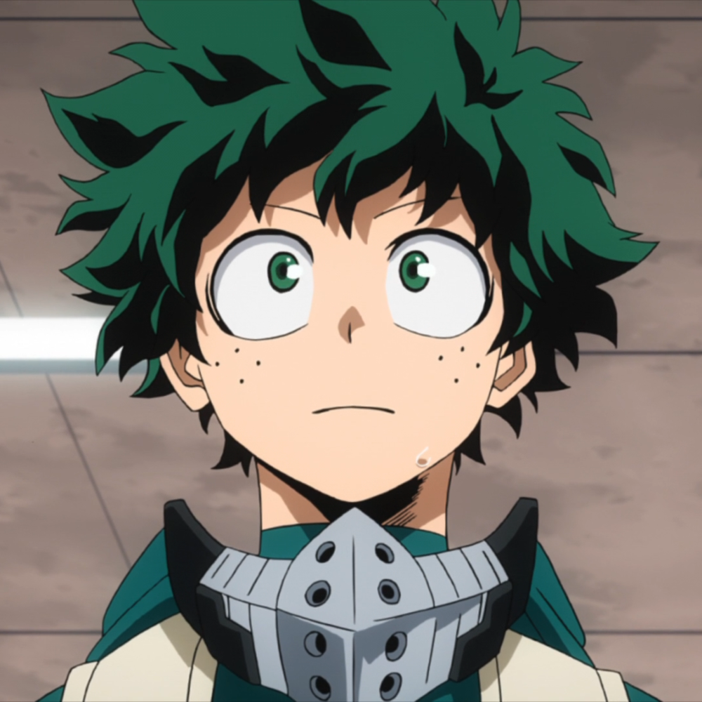
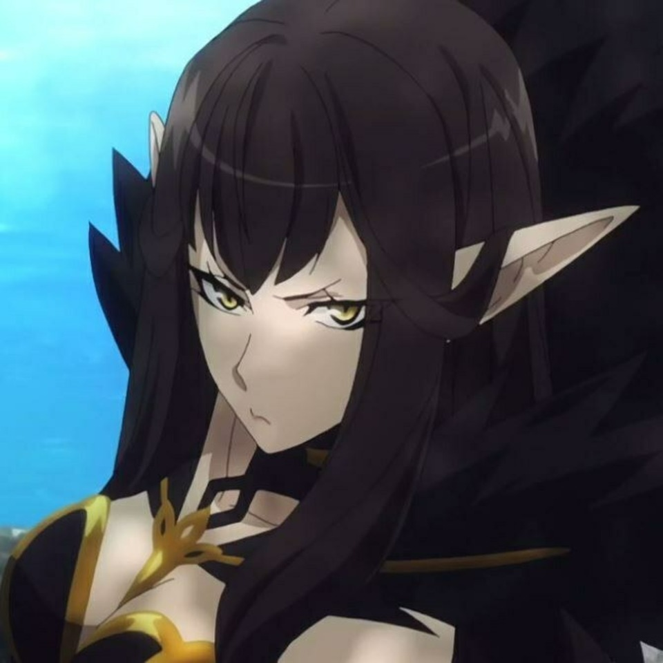
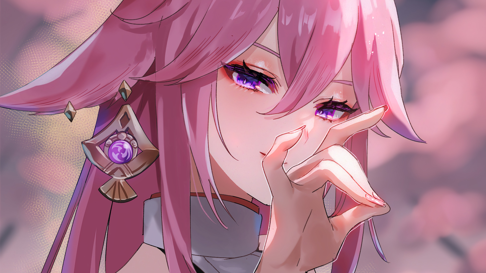
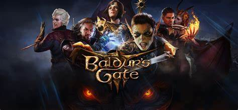

Boku no Hero
Nível: 3/5

Boku no Hero fala sobre um mundo onde todos tem poderes
O protagonista se chama midoriya e seu sonho é se tornar um héroi.
Conheça mais sobre Boku no Hero: Leia +
Fate/Apocrypha
Nível: 5/5

Esse anime é sobre a guerra do santo graal, onde 12 pessoas vão lutar ate a morte
Cada participante ganha um servo para essa guerra
Os servos são personagens historicos da idade antiga.
Conheça mais sobre Fate/Apocrypha: Leia +
Genshin impact
Nível: 4/5

Um jogo no estilo gacha e rpg
Genshin é um dos meus jogos favoritos onde tem uma exploração de mundo gigante.
Conheça mais sobre o mundo de genshin Leia +
Baldur's Gate3
Nível: 4/5

Um RPG de turnos com total lore do D&D
Com uma ótima criação de personagens e combate maravilhoso.
Conheça mais sobre o jogo!!! Leia +
GTA RP/FiveM
Nível: 5/5
Um simulador da vida real dentro do GTA 5
Onde conheçemos varias pessoas novas e passamos momentos perfeitos.
Conheça mais sobre esse jogo maravilhoso!! Leia +